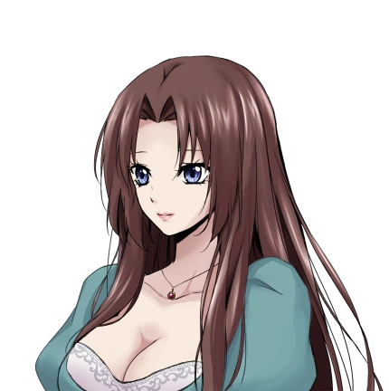
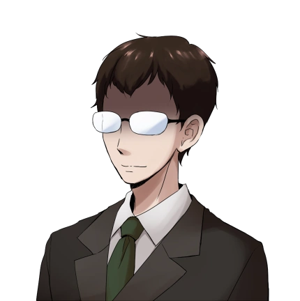
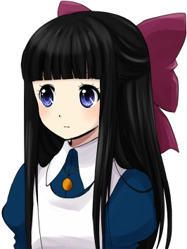

Mad Father

Mad FatherCreador: Sen
Datos realizado: Genero: Horror, Misterio, Puzzle
Descarga: |
|---|
SinopsisMad Father es un juego gratis y descargable hecho con el Wolf RPG Editor por Sen. Es un juego de horror-puzzle que muestra las experiencias de una joven niña de origen alemán llamada Aya Drevis. Aya vive en una aislada mansión con su padre, Alfred Drevis, y su asistente y también maid de la casa, Maria. Su madre, Monika Drevis, falleció un año antes de una enfermedad desconocida. Una noche en la víspera del aniversario de fallecimiento de su madre, Aya es despertada por un grito de su padre, sólo para encontrarse con que la mansión está plagada por cadáveres vivientes y otras cosas fuera de lo normal. Decidida a salvar a su padre, ella deberá enfrentarse a la verdadera naturaleza de su trabajo. PersonajesMonika DrevisMonika Drevis es la fallecida esposa de Alfred Drevis, y la madre de la joven Aya. Durante la mayor parte del juego ella actúa como antagonista, llevándose al padre de Aya. Hasta el final del juego, ella es vista durante flashbacks, y algunas escenas animadas. Al final del juego, ella es vista en la oscuridad tras haber nokeado a Maria, y en el proceso intentando llevarse a Alfred con ella. Es revelado que la razón por la que ella lo maldice es porque ella quería proteger a Aya de su esposo, Alfred, ya que él quería convertirla en una muñeca solo para salvarla de ser 'ensuciada' y salvar su inocencia. AparienciaCuando ella estaba viva, Monika era una hermosa y dotada mujer. Al igual que su hija, su cabello es largo, y le llega hasta más abajo de la cintura, con el flequillo abierto hacia ambos lados de la cara de una manera desordenada. También al igual que su hija, Monika tenía ojos azules. A lo largo del juego, ella sólo se ve llevando una sola vestimenta; un vestido azul elegante con una tela blanca para acentuar su pecho. Cuando es mostrada como fantasma, se observa que hay sangre en su pecho, pero el resto de su cuerpo apenas tiene manchas de sangre; posiblemente esto sea a causa de la herida del cuchillo que su esposo le clavó, causando su muerte. PersonalidadMonika es una mujer de buen corazón: perdona y tiene una tendencia a pasar por alto de los errores de otros, olvidándolos fácilmente. Ella es vista mayormente en flashbacks cuidando de su hija, Aya, salvo en las escenas animadas. Al morir, sin embargo, su amable persona fue convertida en un vengativo espíritu del infierno inclinado por tener su venganza, tomando cualquier víctima atormentada por su esposo, para poder vengarse de sus muertes también. Ella aparentemente detesta a la criada de la casa, Maria, por ser la amante de su esposo. A pesar de que ella nunca se enfrentó a ésta situación de forma directa, ella se mantiene alejada contínuamente de la criada. Extrañamente, a pesar de tener la oportunidad de poder matar a la criada con sus nuevos poderes como fantasma, ella jamás lo hizo, y esto se ha mantenido como misterio durante meses, y probablemente años. Alfred DrevisEs un científico, y el padre de Aya. La mayor parte del juego que es víctima, aunque en los 'buenos' finales resulta ser un antagonista principal. Durante la mayor parte del juego, sólo se ve en flashbacks. Pero un poco más adelante en el juego, se puede ver a Monika Drevis arrastrando a Alfred en el laboratorio AparienciaEl cabello de Alfred se mantiene más bien corto, y es un poco desordenado. Siempre se le ve vistiendo una bata de laboratorio y gafas. En un flashback, Él usa un traje negro con una camisa blanca y corbata verde. Sus ojos no se muestran hasta el buen final del juego, que son de un marrón brillante. Sus anteojos también están agrietados al final, lo que también es contrario a lo que parecía en un principio. PersonalidadAlfred Drevis es un científico loco psicópata que está obsesionado con la preservación de la belleza por hacer muñecas de experimentos con seres humanos y animales vivos. Él atraerá a personas bellas e inocentes con una promesa de buena voluntad y la intención de experimentar con ellos más tarde en su sótano. Lo que le empujó a admirar y preservar la belleza fue cuando mató a su madre y le gustó su bonita cara muerta. Todo comenzó cuando todavía era un niño; a menudo mató pequeños animales por diversión, que era su gran adicción. Él alberga muchas colecciones de experimentos mórbidos que van de los clones, un monstruo, un jardín, y únicas, que una vez fueron humanas, muñecas. Él intentará todo para perseguir sus propios objetivos egoístas, incluso yendo tan lejos como para matar o traicionar a un ser querido sin escrúpulos. Él suele respetar la gente quien encuentra 'útil'. Su esposa, Monika Drevis, que era dueña de una gran finca y mansión y estaba encaprichado con él, era una de esas personas. Ya sea por amor, obsesión o la necesidad de un lugar de trabajo, los dos se casaron y tuvieron una hija. Su compromiso con su relación, sin embargo, es al parecer inestable. Él tiene un romance con su asistenta, Maria, y consistentemente muestra ningún cuidado, incluso si su esposa se entere de ello. Pero cuando acaba con ellos, por lo general con indiferencia los mata a sangre fría. Mató a su esposa cuando ella decide representar una amenaza para sus planes y, cerca del final del juego, casi mata a Maria a causa de no detener a Aya Drevis huyendo. A pesar de la personalidad macabro abrumadora, hay un lado más ligero a él. En su diario que había notado que Aya Drevis está volviendo a ser como él cuando era un niño. Consciente de las actividades de su hija, él cuidaba a Aya y se preocupaba por ella. Su meta es no "ensuciar" su inocencia; cuando llegue el momento en que la hará en una muñeca. Como padre muy protector, no permitió que Aya socializara con los otros niños (o el mundo exterior) para protegerla físicamente. En su lugar, sustituyó una vida social con las muñecas y los animales domésticos, para que así Aya pudiera tener compañía en su hogar y estuviera contenta. Siempre que Aya salía, él la acompañaba, para el deleite de Aya. En un flashback, él estaba realmente sorprendido de ver Aya jugando con una motosierra y la regañó. Él puede mostrarse como un padre amoroso que sabe lo que es mejor para su hija y que ama a su esposa. Irónicamente, incluso se tiene previsto visitar la tumba de su esposa para conmemorar su muerte a pesar de que él era la causa de la misma. En su infancia, él amaba a su madre tanto como él ama a Aya. Es también una posibilidad que se arrepiente de lo que se ha convertido, ya que en su diario escribió que no quiere que Aya haga "los mismos errores que yo". Primera Entrada"Yo nací. Dormía acurrucado contra mi madre." Segunda Entrada"Maté a un animal por diversión. Entonces me volví adicto. Siempre hay gatos y pájaros muertos en mi habitación. Mi madre se enoja cuando los encuentra. Siempre que mi madre está fuera, escondo los cadáveres en el armario." Tercera Entrada"Madre se enteró de que yo estaba matando animales. Mi madre me regañó. Cállate. Apuñalé a mi madre con un cuchillo. Mi madre cayó, todo roja. No conviene una cara tan bonita. Así que limpié la cara de mi madre. Su rostro muerto estaba muy bonito". Cuarta Entrada"Maté a mi madre. Estaba asustado y escapé. Lejos, muy lejos hacia el océano....Yo quería olvidarme de todo. Pero no podía olvidar la cara bonita sin vida de mi madre. Maté a otro. Finalmente me hice adicto a ver las muertas caras de la gente". Quinta Entrada"Encontré un gato muerto en sus cajones. Ocultado en un aparador...exactamente como yo solía hacerlo. Ella está segura de seguir mi mismo camino. Ella parece tener esperanzas. Pero no puedo dejar que eso suceda. Si su deseo se cumple, entonces mi tesoro....ella se ensuciaría. Sí, no hay otra manera. estoy segura de que no lo aceptará. Pero yo ya lo he decidido. Así no va a cometer los mismos errores que yo...". Sexta Entrada"Los seres humanos son hermosos. Pero esa belleza pronto se desvanece. Esa es la ley de este mundo. Pero la he volcado. Después de años de investigación, he encontrado la " belleza eterna ". Un cuerpo que nunca se desvanecerá incluso en la muerte. Un cuerpo tan fresco como cuando todavía estaban vivos. Tienen belleza eterna a su alcance ". Secta Entrada"Al igual que mi viejo yo... Mata exclusivamente por interés. Entonces debe darse en la familia ...". Aya DrevisAya es una niña joven, que tiene unos 10 años de edad (apunto de cumplir 11 dicho por Alfred). Su cabello es negro, y le llega hasta la mitad y un poco mas de la espalda. Presenta un peinado de manera clara con el flequillo cortado uniformemente a través de la frente, justo sobre sus ojos. Su vestimenta normal consiste en un vestido largo hasta los tobillos color azul, con un delantal blanco sobre él, y atado en un lazo blanco en la parte posterior. Como accesorios ella lleva un collar con un colgante de oro, y un gran lazo rosa en la parte posterior de su cabeza. Durante los flashbacks, Aya se muestra llevando un vestido azul con un vestido o camisa blanca por debajo. A esa edad, su cabello era más corto, llegándole solo hasta los hombros. Su peinado también es diferente, llevando dos coletas iguales atadas a dos lazos celestes pasando a blanco. Cuando Aya es transformada en una muñeca en el final malo puede verse que lleva puesto un gran lazo blanco en su cabeza, su usual colgante de oro y un vestido con volantes color rojo largo hasta el suelo con un lazo atado a la izquierda de su pecho. Ella se muestra triste, con una expresión fría en su cara, y sus ojos que anteriormente eran azules ahora son grises. En el final verdadero es vista con el cabello más corto por encima de sus hombros y se ve que ya no lleva más el lazo rosa en su cabeza. Ella lleva una vestimenta parecida a la que lleva durante la mayor parte del juego. AparienciaAya es una niña joven, que tiene unos 10 años de edad (apunto de cumplir 11 dicho por Alfred). Su cabello es negro, y le llega hasta la mitad y un poco mas de la espalda. Presenta un peinado de manera clara con el flequillo cortado uniformemente a través de la frente, justo sobre sus ojos. Su vestimenta normal consiste en un vestido largo hasta los tobillos color azul, con un delantal blanco sobre él, y atado en un lazo blanco en la parte posterior. Como accesorios ella lleva un collar con un colgante de oro, y un gran lazo rosa en la parte posterior de su cabeza. Durante los flashbacks, Aya se muestra llevando un vestido azul con un vestido o camisa blanca por debajo. A esa edad, su cabello era más corto, llegándole solo hasta los hombros. Su peinado también es diferente, llevando dos coletas iguales atadas a dos lazos celestes pasando a blanco. Cuando Aya es transformada en una muñeca en el final malo puede verse que lleva puesto un gran lazo blanco en su cabeza, su usual colgante de oro y un vestido con volantes color rojo largo hasta el suelo con un lazo atado a la izquierda de su pecho. Ella se muestra triste, con una expresión fría en su cara, y sus ojos que anteriormente eran azules ahora son grises. En el final verdadero es vista con el cabello más corto por encima de sus hombros y se ve que ya no lleva más el lazo rosa en su cabeza. Ella lleva una vestimenta parecida a la que lleva durante la mayor parte del juego. PersonalidadAya es una niña buena y amable que en verdad ama a su familia. A pesar de las actividades mórbidas que su padre realiza, ella siempre trata de pensar positivo y vivir una vida normal. Aya solamente mantiene una actitud alegre con Snowball, un conejito blanco el cual es su mascota que siempre está acompañándola. Es de destacar que a pesar de ser testigo de cosas horrorosas hasta para la mayoría de los adultos o que podrían llevar a alguien a la locura, Aya es capaz de mantener su mente tranquila incluso estando en una temprana edad. Su amor por sus padres es una de las fuerzas impulsadoras en el juego. Es mostrado en los flashbacks que sus padres la tratan amorosamente, cimentando que amará a su familia hasta el final. La falta de la vida fuera de la mansión no obstaculizó su madurez, gracias a la atención y cariño que recibía por parte de sus padres. Este hecho es lo que causa que Aya crea que sus padres son realmente buenos. Su devoción por sus padres es lo que la anima a poder enfrentar problemas que resultan imposibles para una niña de su edad. Ella haría cualquier cosa para salvar a un ser querido; incluso de enemigos potenciales. Cuando comienza la maldición, espíritus atormentados empezaron a revivir para reanimar sus últimos desesperantes momentos. Cada vez que debe enfrentarse a alguno de estos espíritus, Aya les ayudaría a obtener su libertad a costa de su seguridad. Un ejemplo que mostró la compasión de Aya fue cuando Maria, la sirvienta de la mansión, fue traicionada y herida por su desquiciado padre. A pesar de ser perseguida por la misma persona, ella curó sus heridas y trató de ayudarla. Se ve que tiene un talento asombroso para curar heridas como las de Maria. En el verdadero final, aun así, es implicado que Aya se vuelve igual que su padre cuando crece; una asesina sociópata. Video |
|---|
Opciones
|
|
|
|---|